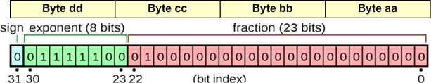
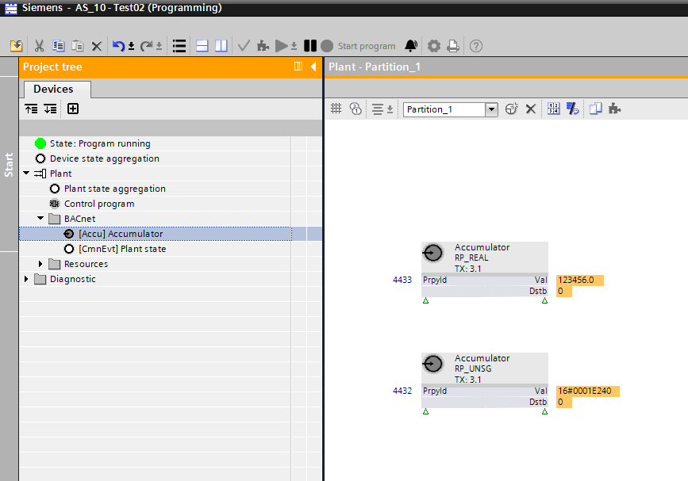

Accumulator (Accu)
Object type Accumulator (Accu) includes BACnet properties for meter features.
* Indicates a Siemens proprietary property.
Naming
There is a dependency between 'Name', 'Description', and 'Name extension'. Changes to one property impact the other two.
You can cancel the dependency by entering a project-specific text.
Example:
If "Aceg" is set as the 'Name', then "Active energy" is selected as the preconfigured 'Description'. If you enter "01" (project-specific text) in addition to 'Name extension', the 'Name' becomes "Aceg(01)". The name also forms the last element of the object name.
Name*
'Name' is a name specific to the instance. It is used to set up a hierarchical object name.
Property ID: 4438
Description
'Description' describes a BACnet object. The 'Description' is a translatable string that is saved internally as a text reference or directly as a string.
Property ID: 28
Name extension*
'Name extension' is an optional extension of the name. It can be used to uniquely identify an object when needed.
You can also use designations from the text catalog for the 'Name extension'.
Property ID: 4437
Other
Present value
'Present value' indicates the present value of a meter or the present calculated value from counted pulses.
Property ID: 85
Present value truncated*
'Present value truncated' is derived from 'Present value' and depicts the lower 32 bits from 'Present value' (64-bit, unsigned). Control programs use 'Present value truncated' to calculate precise consumption deltas. For example, they use it to determine the present volume flow or present electrical power.
Property ID: 4432
Present value scaled*
'Present value scaled' is derived from 'Present value' and converted to a 32-bit real value (with precision loss) according to the 'Scale' property.
Property ID: 4433
Change of value, COV*
'Change of value, COV' specifies the minimum change in the 'Present value' property that triggers a notification to subscribers of this object's 'Change of value' property.
Property ID: 4431
Tracking value*
'Tracking value' represents the present, converted value as read from the measuring device or the accumulated, transformed pulse counted by the controller.
- 'Prescale' is the coefficient used to calculate a measured value or accumulated pulses in 'Tracking value', which is the value displayed by 'Present value'.
- The 'Tracking value' remains within the range of zero and the 'Present maximum value' (with wrapping).
- It is updated even if "Out of service" = 'True'.
Property ID: 5107
Reliability
'Reliability' indicates whether the property value 'Present value' is reliable. If the 'Present value' is unreliable, the 'Reliability' property indicates the cause of the fault, and the "Fault" bit of the state indication is set to 'True'. In normal cases, the 'Reliability' property is set to "No fault".
Property ID: 103
Suppress fault monitoring
'Suppress fault monitoring' determines whether fault supervision (fault events) is suppressed ('Yes' or 'No'). Selecting 'Yes' suppresses the evaluation of 'Reliability' and the 'Reliability' value remains at "No fault".
Property ID: 357
Event state
'Event state' indicates whether this object has an active event state associated with it. The 'Event state' property indicates the event state of the object.
Changes to the value FAULT in the 'Event state' property are considered to be fault events. If the object does not support intrinsic reporting, then the value of this property is NORMAL.
Property ID: 36
Units
'Units' displays the physical unit for 'Present value' when multiplied by the scaling factor from 'Scale'.
Property ID: 117
Prescale
'Prescale' is the coefficient for converting a measured value supplied by a networked peripheral device or the number of pulses counted by the controller in 'Tracking value' and displayed as 'Present value'.
'Prescale' consists of the two following values:
- Multiplier
- ModuloDivide
New Accumulator values are calculated by multiplying the raw value by 'Multiplier' and dividing the result by 'ModuloDivide', considering only the quotient.
Property ID: 185
Scale
'Scale' defines the conversion factor used to multiply the 'Present value' to obtain a measured value in technical units as indicated in 'Units'.
You can select either a floating or an integer scale for the 'Scale' property.
- "Float Scale" is a flexible, variable floating point that does not allow for a lossless depiction. In this case, the resulting value is calculated by multiplying 'Present value' by 'Scale'.
- "Integer Scale" is a whole number that allows for lossless depiction and editing. In this case, the resulting value is calculated by multiplying 'Present value' by 10 to the power of 'Scale'.
You can enter the values manually for each option.
Property ID: 187
Last update time
'Last update time' shows the date and time of the last change to 'Present value'.
Property ID: 4782
Accumulator object with Modbus integration
When used with Modbus, the Accumulator object represents a subsystem-specific meter value. With this integration, the Accumulator object supports the following additional subsystem-specific extension properties.
Data type*
'Data type' defines the data type for encoding the subsystem-specific data type.
32-bit integer data formats with Registers | ||
|---|---|---|
Encoding format | Description | Byte order |
U32-B | unsigned 32-bit; big-endian | dd cc bb aa |
S32-B | signed 32-bit; big-endian | dd cc bb aa |
U48-B | unsigned 48, big-endian | ff ee dd cc bb aa |
S48-B | signed 48, big-endian | ff ee dd cc bb aa |
U64-B | unsigned 64, big-endian | hh gg ff ee dd cc bb aa |
S64-B | signed 64, big-endian | hh gg ff ee dd cc bb aa |
Example:
The decimal number 1144201745 (depends on the encoding format) has been sent as an unsigned 32-bit integer data format. Possible encoding:
1144201745 ---> 0x44332211 : U32-B (high word first, high byte first)1144201745 ---> 0x33441122 : U32-B-S (high word first, low byte first)1144201745 ---> 0x11223344 : U32-L (low word first, low byte first)1144201745 ---> 0x22114433 : U32-L-S (low word first, high byte first)
32-/64-bit float data formats with Registers | ||
|---|---|---|
Encoding format | Description | Byte order |
F32-B | float 32, big-endian | dd cc bb aa |
F64-B | float 32, big-endian | hh gg ff ee dd cc bb aa |
Example:
IEEE-754 32-bit float data format encoding

Polling times*
'Polling times' defines the polling timer used to collect the subsystem-specific data point. The T1, T2, and T3 interval values can be configured in the 'Fieldbus management object'. Heartbeat timers and polling timers are independent of each other.
T1: Highest priority. Typical interval value: 0.5s...5s.
T2: Medium priority (default). Typical interval value: 5s...60s.
T3: Low priority. Typical interval value: minutes...hours.
Property ID: 4793
Accumulator object with M-Bus integration
When used with M-Bus, the Accumulator object represents a subsystem-specific meter value. With this integration, the Accumulator object supports the following additional subsystem-specific extension properties.
Data type*
'Data type' defines the type of encoding used by the subsystem-specific device.
- Auto: Automatic M-Bus data type determination
- U: Unsigned value
- S: Signed value
- F: IEEE-754 32-bit float value
- BCD: BCD (binary-code-decimal) encoded value
Accumulator object with onboard and TX-I/O modules
When used with onboard and TX-I/O modules, the Accumulator object represents the accumulated and scaled value of a pulse counter. With this integration, the Accumulator object supports the following additional subsystem-specific extension properties.
Signal type*
'Signal type' defines the signal type for its I/O channel. The available signal types depend on the specific hardware, such as the I/O module type or onboard I/O type.
Select the checkboxes for the preconfigured signals: mechanical contact (10/25 Hz) and electric contact (100 Hz).
Property ID: 4968
Set value
'Set value' modifies 'Present value'.
'Set value' indicates the value of the last modification.
'Set value' is set to zero if no write operation has occurred.
Property ID: 191
Value before correction
'Value before correction' indicates the 'Present value' just before the last write operation to 'Set value'.
'Value before correction' is updated when the 'Set value' property is written.
'Value before correction' is zero if no write operation has occurred.
Property ID: 190
Change time stamp
'Change time stamp' indicates the date and time of the last modification to 'Present value' due to a write operation from 'Set value'.
'Change time stamp' is updated if 'Set value' is written.
'Change time stamp' is undefined (wildcards) if 'Set value' was never written.
Property ID: 192
Trend
Trend is a separate BACnet object (Trendlog object). It is not, however, depicted in ABT Site and in the Programming editor as a separate BACnet object, but rather as the trend function of a BACnet object.
Enable trend
'Enable trend' enables the trend function.
A new BACnet object of type Trendlog is instantiated and automatically connected to the 'Present value' property of the selected object. The BACnet properties required for the setting are shown in the Properties tab.
- Yes: Trend function is enabled.
- No: Trend function is disabled.
Enable logging
'Enable logging' enables trend logging. Data point logging begins when the start date and start time are reached.
- Yes: Logging is enabled.
- No: Logging is disabled.
Trend logging stops either when the stop date and time are reached or when the buffer is full, if set.
The start date and start time (wildcards) are not defined by default. In other words, the setting 'Enable logging' = 'Yes' immediately starts trending.
Property ID: 133
Logging type
'Logging Type' determines when a data point is trended.
- Polling: The object value is trended continuously at the interval entered in the 'Logging interval' setting.
- Triggered: The value of the object is trended when the trigger is activated.
- COV (Change of value): The new value is logged each time it changes ("COV").
Property ID: 197
Logging interval
'Logging interval' determines how often (cycle) the value is logged. The setting takes effect when 'Polling' is selected for 'Logging Type'.
Property ID: 134
Start time
'Start time' determines when (date and time) trend logging begins.
Property ID: 142
Stop time
'Stop time' determines when (date and time) trend logging ends.
Property ID: 143
Stop when full
'Stop when full' determines if trend logging stops when the buffer is full.
- Yes: Logging stops when the buffer is full.
- No: Logging continues even if the buffer is full. The new values overwrite the oldest values (first in first out).
The setting 'Notification threshold' can determine when an event to retrieve data is triggered, e.g., by Desigo CC, before the buffer is full.
Property ID: 144
Buffer size
'Buffer size' determines the maximum number of values that can be saved to the buffer. The 'Stop if full' setting determines how to proceed when the buffer is full.

You can only change the 'Buffer size' property when 'Enable logging' is 'No'. The 'Buffer size' property value must be greater than or equal to the 'Notification threshold' property value.
Property ID: 126
Configurable event message texts*
'Configurable event message texts' contains three sets of character strings that are used by the 'Event message texts' property for notifications of "To offnormal", "To fault", and "To normal" events generated by this object. These character strings can optionally contain proprietary text substitution codes to incorporate dynamic information, such as the date and time.
Property ID: 352
Align intervals
'Align intervals' determines if the periodic polling interval aligns with the start of a specific second, minute, hour, or day. This setting does not apply to 'Logging Type' = 'COV'.
This ensures that values from multiple, simultaneous trend logs can be saved at the same time and compared. Alignment is only possible for whole number multiples (1...x) of a second, minute, hour, or day.
Property ID: 193
Enable event detection
'Enable event detection' indicates whether intrinsic reporting is enabled (TRUE) or disabled (FALSE) in the object. It also controls whether the object is considered by event summarization services (TRUE) or not (FALSE). This property is set during system configuration and does not change dynamically.
When this property is set to FALSE, the 'Event state' is NORMAL, and the 'Acknowledged transitions', 'Event time stamps', and 'Event message texts' properties are equal to their respective initial conditions.
Property ID: 353
Interval offset
'Interval offset', measured in hundredths of a second, allows cyclical trend logs to be spread out. With many active trend logs, this prevents all values from being polled at the same time. Polling can be subdivided by staging in groups.
'Interval offset' is only active if the setting 'Align interval' = 'Yes'.
Property ID: 195
Accumulator object in the Programming editor
The Programming editor does not have a special function block for the Accumulator object. The Accumulator object must be used together with the "Read property" function block to access 'Present value truncated'.
Instantiation of the Accumulator object in the Programming editor
The Accumulator object can be added to the I/O configuration in ABT Site. Its values can then be used in the control logic by reading them with the "Read property" function blocks.
Property 'Present value' and 'Present value truncated'
The function blocks cannot read 'Present value' (property ID 85) because it is 64 bits (Dstb = 1).
Property 'Present value truncated' (property ID 4432) is derived from 'Present value' and is shortened to a 32-bit unsigned value. 'Present value truncated' can be read and used as an alternative to 'Present value'.
Property 'Present value scaled' (property ID 4433) is derived from 'Present value', shortened and converted to a 32-bit floating value via the 'Scale' property. 'Present value scaled' can be read and used as an alternative to 'Present value'.
